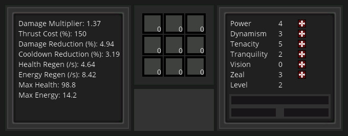

So what happened this week in Beyond Dying Skies development? Did we get the machine system in place? Unfortunately no, I realized I needed to put a little more TLC into most of the legacy systems and fix some mission critical bugs.
Some of the more interesting features are the creation of random spawning chests and the portal gun which allows you to warp between different world types. The chest system will be implemented as a lottery system and reward random items to the player if found. Drones now launch missiles and can tunnel through geometry to get to the player, which usually ends in devastation. The user interface and text code got a much needed refactor which will allow expansion and new features to be added in the future. One of these features that just got implemented was the addition of allocatable stat points. Previously a fixed distribution of stat points was awarded to the player after a level up. This has been changed so that the player can select any distribution of stat points by pressing newly placed stat buttons on the extended GUI. The user interface also got some new features such as the focus bar which displays focusable objects and displays object properties such as drone health. This UI element is displayed with the use of RMB while targeting an object. It still needs to be flushed out but the proof of concept seems to work well.

The stat properties now evolve similar to how they would in a real RPG. Health, energy, and secondary attributes all scale with stat points and player level and give a unique dynamic complexity to the game. The game is starting to feel “fun” with this added complexity. The concept of “fun” still eludes me, but after making somewhat minor changes and improvements this week, I sense a shift in my cognitive response to the game. I am play testing longer, just trying to get further into the game which usually ends in me perishing to some gruesome demise. I have started “building” in the game for the first time, trying to secure a stronghold in which I could launch offensive strategies against the swarm of enemies trying to destroy my virtual world. I am starting to believe that some of the dream goals I have in mind for the game will certainly take things to the next level and I am excited to try those ideas out, but it is very important to secure a base in which to build upon first, rather than to shoot for the moon too quickly and end up failing.
With some of these user experience improvements out of the way, it might just be time to put in the machine/build system into the game. I have a unique solution to typical problems faced by build systems in other games and I believe this design could be quite interesting to play with since it involves “automation”. If this system works as I hope it will, players should be able to slowly “evolve” their world and terraform the landscape as they wish. However I believe this system will take longer than two weeks to fully implement so I may need to add additional planning before diving into it.
This sprint turned out to be quite successful for the project. For the last month, I was plagued with “coder’s block” and had little motivation to work on the project. After coming back into the project refreshed and ready to improve things, I stumbled upon one key problem with the game, it simply was not an enjoyable experience.
The first question on my mind was, “Why didn’t I notice this problem earlier?”. It was quite simple. I had spent an enormous amount time optimizing hot code paths and running the game on low-end hardware as well as spending even more time making custom textures and audio samples so I could give the game a polished feel, that I neglected the “fun” aspect of the game. I wanted the game to be fast so badly that I withheld critical quality of life issues from the game. The first example of this was only allowing 10 block drops to be in the world at any one time. After increasing this number to 50, which still is quite low, I realized that game seemed to be more “fun”, yet I could not put my finger on “why”.
The next big realization I had about why the game was not enjoyable was because the upgrades were too easy to acquire and there was no “skill” component in the game. Why play when there is not an incentive to improve? This realization led me to flushing out the crafting system, which I had left abandoned for weeks, and thinking up a decent component system so players could acquire upgrades at the optimal rate. Unfortunately, I have made the game too difficult but I think that is a big improvement from two weeks ago. In this time I also added a leveling system and flushed out how attribute points and attribute properties work, creating a diminished returns model to describe how these stats would scale as the player progressed in the game and eventually came to the idea of adding unlockable suit upgrades. Currently the only upgrade is at level 3 in which you unlock double jump / boosters but this idea of “unlocking” gives the player a stronger desire to progress. I am planning more unlockable abilities in the future.
The last thing that immediately came to my attention were the bugs. Drones would constantly get stuck inside the terrain and make it impossible to level up. Drones were completely silent and would surprise kill you before the player realized he was in danger. Asteroids would soak up all available drops and make it impossible to pick up items until the event stopped (still an issue). The UI system seemed clunky and desperately needed quality of life improvements. After I realized the vastness of these issues, I immediately started working on removing these problems. As I removed problems, I started adding new features and I quickly got locked into an organic, healthy, and productive flow.
After looking back on the last two weeks, I see tremendous improvement in the user experience and hopefully I am on the right track for tackling more long term issues that need to be addressed. Sometimes you just have to take a break and recharge before you can crack some of the toughest bugs or design issues or even just noticing that things are lackluster and need to be improved.
Some things that are exciting me about future sprints are the ether subsystem. The ether subsystem allows you to downgrade any block into ether which is a currency item. This currency powers new terrain editing features such as placing 5x5 swatches through a copy/paste mechanism. New items and recipes also give the game more of a dynamic feel and different strategies and play styles are starting to emerge. I am excited to begin working on the new dynamic block interaction subsystem which will allow creation of automated machines and other exciting contraptions.